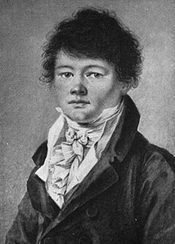

Arthur Schopenhauer foi um renomado filósofo alemão nascido em 22 de fevereiro de 1788, em Danzig, que hoje faz parte da Polônia. Ele é amplamente reconhecido por suas ideias originais e perspicazes sobre a natureza da existência humana. Schopenhauer foi um dos principais pensadores do século XIX, cujo trabalho teve um impacto duradouro no desenvolvimento da filosofia ocidental.
Desde jovem, Schopenhauer mostrou uma mente inquisitiva e uma inclinação para a filosofia. Ele estudou na Universidade de Göttingen e posteriormente na Universidade de Berlim, onde se dedicou ao estudo das obras de filósofos clássicos, como Immanuel Kant e Platão, entre outros.
Schopenhauer tornou-se conhecido por sua abordagem pessimista da vida e por sua ênfase no sofrimento humano como uma condição fundamental da existência. Sua obra mais influente, "O Mundo como Vontade e Representação", publicada em 1818, apresentou suas ideias distintas sobre a natureza da realidade e da vontade humana.
Além de suas contribuições filosóficas, Schopenhauer era um escritor prolífico e suas obras abrangem uma variedade de temas, incluindo ética, estética, religião e psicologia. Embora tenha enfrentado certa resistência e incompreensão durante sua vida, Schopenhauer alcançou reconhecimento após sua morte e exerceu uma influência significativa sobre filósofos posteriores, incluindo Friedrich Nietzsche e Sigmund Freud.

Schopenhauer na juventude
Vida e Contexto Histórico
Arthur Schopenhauer nasceu em 22 de fevereiro de 1788, em Danzig, que na época fazia parte do Reino da Prússia e atualmente é conhecida como Gdańsk, na Polônia. Ele veio de uma família abastada e influente, o que lhe proporcionou acesso a uma educação privilegiada desde cedo. Seu pai, Heinrich Floris Schopenhauer, era um próspero comerciante, e sua mãe, Johanna Schopenhauer, era uma escritora reconhecida, o que expôs Arthur a um ambiente intelectual desde sua infância.
Schopenhauer cresceu em meio a um período de transformações profundas na Europa. O final do século XVIII e o início do século XIX foram marcados por mudanças políticas, sociais, culturais e filosóficas significativas em toda a região. A Revolução Francesa (1789-1799) havia sacudido as estruturas tradicionais de poder e autoridade, inspirando ideais de liberdade, igualdade e fraternidade.
Além disso, o Iluminismo, um movimento intelectual que promovia a razão, a ciência e a liberdade individual, continuava a influenciar o pensamento europeu. O surgimento da Revolução Industrial também estava transformando radicalmente a sociedade, alterando as relações de produção e provocando mudanças na vida urbana e rural.
Nesse contexto de agitação e mudança, surgiram novas correntes filosóficas e culturais que desafiaram as ideias tradicionais sobre a natureza humana, a sociedade e o universo. Schopenhauer viveu e contribuiu para esse ambiente intelectual vibrante, desenvolvendo suas próprias ideias inovadoras que ecoaram as preocupações e os questionamentos de sua época.
As Ideias de Schopenhauer
Arthur Schopenhauer é amplamente conhecido por sua filosofia única, que lança luz sobre a natureza fundamental da existência humana. Central para suas ideias está uma visão profundamente pessimista sobre a condição humana, na qual ele enfatiza o papel central do sofrimento e da insatisfação.
Schopenhauer via a vida como sendo inerentemente marcada pelo sofrimento. Ele acreditava que o mundo estava impregnado de dor e que os seres humanos estavam presos em um ciclo interminável de desejo, insatisfação e sofrimento. Essa visão sombria da existência foi moldada por suas próprias experiências pessoais e pela observação da miséria e da injustiça ao seu redor.
Para Schopenhauer, a busca pela felicidade muitas vezes resultava em desilusão. Ele argumentava que os desejos humanos eram insaciáveis, levando as pessoas a uma busca incessante por prazeres fugazes e satisfações passageiras. No entanto, essa busca nunca poderia fornecer uma verdadeira felicidade duradoura, pois estava sempre acompanhada pela sombra do sofrimento e da angústia.
Ao invés de buscar a felicidade através da satisfação dos desejos mundanos, Schopenhauer propunha um caminho diferente para a redenção. Ele via a renúncia aos desejos e a aceitação do sofrimento como os primeiros passos para transcender a miséria da existência humana. Para Schopenhauer, a verdadeira sabedoria residia na renúncia ao mundo das aparências e na busca pela tranquilidade interior através da contemplação e da introspecção.
O Conceito de Vontade e Representação
Uma das contribuições mais significativas de Schopenhauer para a filosofia é o conceito de "Vontade e Representação". Ele desenvolveu essa ideia para explicar a natureza fundamental da realidade e a relação entre a mente humana e o mundo externo.
Schopenhauer argumentava que a realidade é moldada pela nossa percepção e desejo, o que ele chamava de "Representação". Segundo ele, o mundo que percebemos não é uma representação objetiva da realidade, mas sim uma construção subjetiva que reflete nossas próprias concepções e interpretações.
No centro desse conceito está a noção de "Vontade", que Schopenhauer via como uma força primal e irracional que impulsiona toda a vida. Ele acreditava que a Vontade era uma força cega e impulsiva, sem propósito consciente, que motivava os seres vivos a agir e buscar a satisfação de seus desejos.
Schopenhauer via a Vontade como a essência subjacente de todas as coisas, uma força que permeia o universo e impulsiona os processos naturais. No entanto, ele também argumentava que a Vontade muitas vezes levava ao conflito e ao sofrimento, já que os desejos individuais entravam em conflito uns com os outros e com as limitações do mundo externo.
Assim, para Schopenhauer, a vida era uma manifestação da luta constante da Vontade para se realizar e encontrar satisfação, uma luta que muitas vezes resultava em dor e angústia. Ao compreender a natureza da Vontade e sua influência sobre a percepção humana, Schopenhauer buscava oferecer uma visão mais profunda e abrangente da existência e dos motivos que impulsionam a ação humana.
O Mundo como Vontade e Representação
Crítica à Metafísica e ao Idealismo
Schopenhauer foi um crítico contundente da metafísica e do idealismo predominantes em sua época. Ele via essas abordagens filosóficas como tentativas de escapar ou negar a realidade fundamental do sofrimento humano e da condição imperfeita da existência.
O idealismo, que enfatizava a primazia da mente e da razão na criação da realidade, era alvo das críticas de Schopenhauer. Ele argumentava que essa visão idealista ignorava a natureza primal e irracional da Vontade, que permeava todas as coisas. Em vez de reconhecer a realidade do sofrimento humano, o idealismo muitas vezes buscava transcendê-lo por meio de conceitos abstratos e especulativos.
Da mesma forma, a metafísica, que se preocupava com questões além do mundo físico observável, também foi alvo das críticas de Schopenhauer. Ele via a metafísica como uma tentativa fútil de escapar das realidades práticas da vida e da experiência humana. Ao invés de lidar com os desafios e dificuldades da existência, a metafísica muitas vezes se perdia em especulações sobre universos alternativos e realidades transcendentais.
Em contraste com essas abordagens, Schopenhauer propôs uma visão mais pessimista da existência. Ele reconhecia a dor e o sofrimento como partes inevitáveis da vida humana e rejeitava qualquer tentativa de negá-los ou transcendê-los. Em vez disso, ele argumentava que a verdadeira sabedoria residia em aceitar e enfrentar o sofrimento de frente, buscando uma compreensão mais profunda da natureza humana e da condição humana. Essa visão sombria da existência influenciou profundamente suas obras e o tornou um dos filósofos mais originais e provocativos do século XIX.
Recomendações:
(Livro) Desapegar-se com Shopenhauer
Desapegar-se com Shopengauer - Céline Belloq